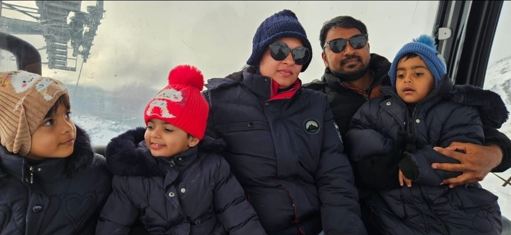

Living
& thriving
Arriving is the start, not the finish, the human work of settling in, finding your people and helping your family flourish.
Settling in is a season, not a switch you flip
After all the registration, visas and logistics, here you are. It’s worth pausing to recognise that: most people are so busy getting here that they forget to notice they’ve arrived. But settling in is its own quiet journey, and it deserves the same patience you gave the rest.

Nobody feels completely at home on day one, and nobody should expect to. Belonging is built slowly, out of small ordinary things: a regular coffee spot, a colleague who becomes a friend, the first weekend that feels like fun rather than admin. This step is about giving that process room, and knowing what helps it along.
The truth we share with everyone: the first few months are a mix of wonderful and wobbly, and that’s completely normal. The families who thrive aren’t the ones who never find it hard, they’re the ones who expected the dip, and kept going.

More than a job, a life
We could tell you about the work-life balance. It’s easier to show you a week in it.


The role is why you come. The life is why you stay.
The arc of settling in
Most people move through a recognisable emotional arc in their first year. Knowing the shape of it ahead of time is reassuring, especially the middle part, when the novelty fades before the belonging arrives.
The honeymoon
excited & busyEverything is new and a little thrilling, the scenery, the accents, the supermarket. You’re busy setting up a life, and the adrenaline carries you. Enjoy it, take the photos, and don’t worry that it won’t always feel this heightened.
The dip
wobbly & homesickThis is the part nobody warns you about. Once the novelty fades, the distance from home, the small frustrations and the effort of starting over can catch up with you. It’s not a sign you made a mistake, it’s a normal, well-documented stage. Naming it takes away most of its power.
Finding your feet
settlingRoutines form. You have a GP, a favourite beach, people you’d call on a bad day. Work feels familiar, the children have friends, and the place stops feeling like somewhere you’re visiting. The wobble eases almost without you noticing.
Home
belongingOne day you realise you’ve stopped converting prices, you know the back roads, and you’re the one welcoming the next new arrival. It rarely happens in a moment, but somewhere in the first year, New Zealand quietly becomes home.
You’ll hear from us when it’s hardest
That arc is exactly why our support is timed the way it is. Most agencies are busiest before you fly and quiet afterwards. We work the other way round, because the months after you arrive are the ones that decide whether the move lasts.
The week you land
We know your arrival date, and you have a mobile number that a person answers. Not a duty line or a ticket, the same people you’ve dealt with all along, who know your name and your situation.
Your first fortnight
We call once the adrenaline wears off, when the admin arrives all at once: IRD number, bank account, GP enrolment, school forms. We’ll also introduce you to a family who made the same move to your region, if you’d like that.
Around three months
A deliberate check-in, timed for the dip, because we know it’s coming. It’s the call people are most surprised to get and most glad of. Not a satisfaction survey, just an honest conversation about how it’s actually going.
A year on, and after that
There’s no end date on it. A contract question, a move to another region, work for your partner, a reference years later. We’d rather you called. We measure this work by how you’re living a year on, not by the placement.
We should be honest about what this isn’t: we’re a small team, not a concierge service. We won’t organise your weekends or pretend to be your friendship circle, and the settling-in itself is still yours to do. What we do promise is that you’ll always know who to call, and they’ll already know your story.
The things worth going into with your eyes open
Most of what people find here is better than they expected. A few things are harder, and we would rather you knew them before you decided than discovered them in month three.
Home is a long way away
Flights to the UK, South Africa or the Gulf take the best part of a day and are a real annual cost. Most people plan one trip home every year or two and budget for it deliberately. Video calls across a twelve-hour time difference take some working out, and the first Christmas away is usually the hardest one.
Quality varies as much as price
Auckland and Wellington are expensive to buy in and competitive to rent in, while many regions are markedly cheaper. Less expected is the housing stock itself: a good deal of it is older and less insulated than new arrivals assume, so winter indoors can feel colder than the climate suggests. Ask about insulation, heating and whether a home meets the Healthy Homes standards. Renting in New Zealand covers what to look for.
A smaller country means smaller services
Highly complex and subspecialty work is concentrated in the main centres, so if your practice depends on high volumes of rare cases you may see fewer of them than in a large tertiary centre abroad. Many clinicians find the trade-off worthwhile: broader scope, more autonomy and more continuity. Some find the narrower case mix a genuine loss. It is worth being honest with yourself about which you are.
Pay in context
Salaries generally sit below Australia and well below the Gulf. They are also set by national collective agreements, which means the rate is the same in Invercargill as in Auckland, and progression is transparent rather than negotiated. Set against the cost and pace of life it works out differently for different people. Pay agreements sets out the mechanism, and your profession guide gives indicative bands.
Registration takes months, not weeks
Between assessing your qualification, verifying documents, English evidence where it applies and the regulator’s own queue, think in months. Nothing about it is unusually difficult, but it rewards starting early and gathering paperwork before you think you need it. Registration has the sequence for your profession.
Flatter, though not uniformly
Practice here tends to be collaborative and less hierarchical than many systems, and most people find leave gets taken. It is not universal, and healthcare is healthcare: there are pressured departments, short-staffed weeks and shifts that overrun. What people report is a different default, not a different profession.
The things that turn a place into home
Settling isn’t passive, a few simple, deliberate habits make the difference between feeling like a visitor and feeling like you live here. These are the ones our clinicians mention again and again.
Build a routine early
Find your everyday anchors fast, a café, a gym, a running route, a Saturday market. Ordinary routines are what make a new place feel like yours, and they’re the quickest antidote to the unsettled early weeks.
Say yes to invitations
Kiwi friendliness is real, but friendships still take effort on both sides. Accept the after-work drink, the school-gate chat, the neighbour’s BBQ. The people who connect quickly are the ones who say yes more often.
Get outside
Nothing roots you here faster than the land. Walk the local track, learn to fish, take up a water sport, explore your region on weekends. The outdoors is where New Zealand life happens, and where friendships are made.
The career matters. The life around it does too.

A successful move has to work for everyone, not just on paper or at work. Often it’s a partner or a teenager who finds it hardest, and who needs the most room to find their own footing.
Your partner’s own life
The trailing partner often has the hardest adjustment, no ready-made colleagues, a career to rebuild. Their settling matters enormously, so protect time for them to find work, purpose and friends of their own. Don’t underestimate how much it shapes the whole family’s happiness.
Children, at their pace
Younger children usually adapt within weeks; teenagers may grieve the friends and life they left and need longer. Keep talking, stay patient through the ups and downs, and lean on schools, they’re well used to helping new arrivals find their place.
You, as a couple
Big moves test relationships as well as strengthen them. Be kind to each other through the wobbly months, share the load of settling, and make time for the things you enjoy together, not just the endless to-do list of a new life.
Finding where you belong
Belonging often comes through the communities that already feel familiar: your faith, your culture, your people, even the foods of home. We’re always glad to help you find them, because they make the early days so much warmer.
Your people are already here
South African, Filipino, Indian, British and many other communities are well established across New Zealand. Connecting with families who’ve made the same move means a ready-made circle who understand exactly what you’re going through.
Finding your communityA place to worship
Churches, mosques, temples and faith communities are part of life here, and often among the warmest welcomes a newcomer receives. Wherever you settle, there’s likely a community of your faith close by.
Faith & communityThe flavours you’ll miss
From biltong and spices to your favourite groceries, the small tastes of home matter more than you’d expect. We can point you to where to find them, and the cafés and shops that become familiar comforts.
Useful contactsWhere newcomers ask
Local Facebook groups, parents’ networks and profession circles are where the small questions get quick, kind answers, from the best dentist to where to buy a good heat pump. They’re a quiet lifeline in the early months.
Groups & networksTell us where you’re moving from and what matters to your family, and we’ll connect you with the partners, communities and contacts we trust. Few things make us happier than helping a family find their place.
Looking after yourself through it
Thriving isn’t only about logistics and friendships, it’s about minding your own wellbeing while you find your feet. A few honest reminders for the wobbly stretches.
Homesickness is normal, not failure
Missing home doesn’t mean you chose wrong. It means you loved what you left. Let yourself feel it, talk about it, and trust that it softens as your new life fills in around you.
Stay connected, but be present
Regular calls home are a comfort, but living entirely online keeps one foot in the old life. Plan your trips back, then give yourself permission to be fully here in between.
Give it a full year before judging
The first year has seasons, literally and emotionally. Try not to make any big "was this a mistake?" decisions in the dip. Almost everyone who pushes through comes out the other side glad they did.
Ask for help, it’s here
Whether it’s a GP, a community group, a colleague or us, you don’t have to white-knuckle the hard days alone. Reaching out early is what settled, thriving people do, not a sign of struggling.

I tell everyone the same thing before they fly: there will be a Tuesday, a few months in, when you wonder what on earth you’ve done. It passes. For my own family, home crept up quietly, one day I was giving a newcomer directions without thinking, and I realised I’d stopped feeling like a visitor. Be patient with the dip, say yes to the invitations, and let the small routines do their work. Thriving here isn’t a moment you arrive at. It’s a life you build, one ordinary good day at a time.
SophieCEO & Founder, Ethicare Resourcing
The things people ask us first
How long does it take to feel settled?
For most people, somewhere around six months things start to click, and by the end of the first year New Zealand feels like home. Everyone’s different, some settle faster, some need longer, but if you’re still finding it hard at three or four months, that’s completely normal and not a sign anything’s wrong. The dip is part of the process, not the end of it.
What if I get homesick?
You almost certainly will at some point, and that’s healthy rather than a problem. Stay in touch with home, plan a trip back to look forward to, but also pour energy into building your life here: routines, friendships, getting outdoors. Homesickness fades fastest when your new life has enough in it to hold your attention. And if it weighs heavily, talk to someone; you don’t have to carry it quietly.
How do I make friends as an adult?
Through repetition and showing up. Say yes to work invitations, join something you’d enjoy anyway, a club, a class, a sport, and be the one who suggests the coffee. School gates, neighbours and other migrant families are natural starting points. It can feel slow at first, but Kiwis are welcoming, and a few months of saying yes usually leaves you with a real circle.
My partner is struggling more than me. Is that normal?
Very. The person with the job arrives to a ready-made structure and colleagues, while a trailing partner often has to build everything from scratch. It’s one of the most common strains on a move, and the answer is to take it seriously: protect time and support for them to find work, purpose and people of their own. Their settling is every bit as important as yours.
Can I still lean on Ethicare once I’ve arrived?
Always. Our relationship doesn’t end when you start your job. That’s rather the point of how we work. Whether you need an introduction to a community, a steer on something practical, or just a familiar voice on a wobbly week, we’re here. We measure our success by how well you’re living a year on, not by the placement itself.
You’ve reached the end of the six steps
From the first honest question to building a life you love, that’s the whole journey. Wherever you actually are on the path right now, dreaming, deciding, packing or already here, we’d be glad to walk the next stretch with you.
Read a little deeper
However settled you are, we’re still here
Just arrived, a year in, or still only dreaming about it. Tell us how things are going and what you need. Honest support, a friendly introduction, or a familiar voice. That’s what we’re here for.
Ethicare Resourcing · your guide to a life and career in New Zealand.